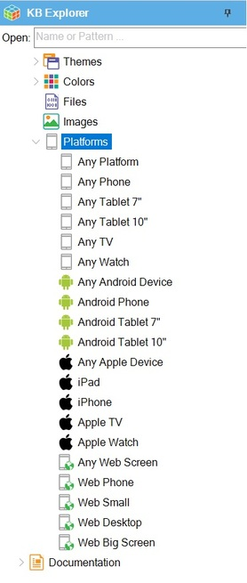
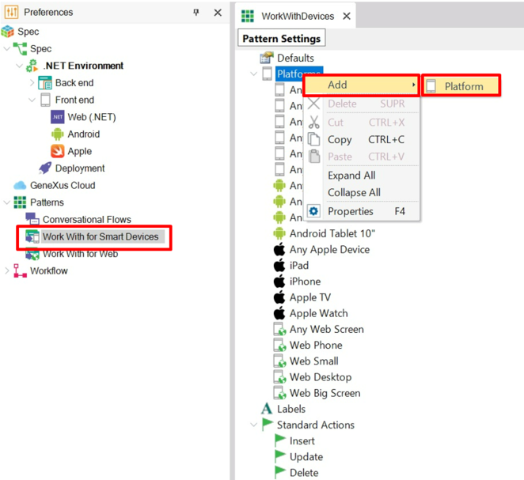

Platforms vary by OS, Version, Device Kind, Size, among other aspects, and are key to defining layouts that vary by those aspects. Some of the platforms are predefined with default settings, and you can customize those settings or create your own platforms too if you require it.
The Platforms node lists all the defined platforms of a KB, and is also a shortcut to change the settings of a platform. It is located in the KB Explorer, under the Customization node.

For each platform, some properties are offered to configure several aspects:
Below, you will find a detailed list of the properties offered for different platforms. You can find them under Customization node > Platforms subnode in the KB Explorer:
| Name | Specifies the Platform name |
| OS | Specifies the Target OS for this platform. Values: All, Android, iOS, Web |
| Version | Specifies the OS Version 1 |
| Device Kind | Specifies the Target device kind for the platform. Values: All, Phone or Tablet, TV, Watch |
| Size | Specifies the screen size and resolution. Values: All, Small, Medium, Large |
| Style | Specifies the Design System or Theme |
| Additional Styles property | Specifies the Additional UI Design Systems or Themes associated with this platform |
| Navigation Style property | Specifies the navigation style |
| Default Layout Orientation property | Specifies the Layout orientation |
| Bounds Name | Specifies the Name for the given bounds |
| Minimum Shortest Bound | Specifies the minimum size in dips of the shortest device bound 2 |
| Maximum Shortest Bound | Specifies the maximum size in dips of the shortest device bound 3 |
| Minimum Longest Bound | Specifies the minimum size in dips of the longest device bound 4 |
| Maximum Longest Bound | Specifies the maximum size in dips of the longest device bound 5 |
1 Version property: Available for Android, iOS, and Web.
2 Minimum Shortest Bound property: Only available for iOS.
3 Maximum Shortest Bound property: Only available for iOS.
4 Minimum Longest Bound property: Available for iOS and Web.
5 Maximum Longest Bound property: Available for iOS and Web.
To create a new Platform select the Preferences tab > Patterns node > Work With subnode (you have to double-click on it to open its configuration tree).
Once there, right-click on the Platforms node and select: Add > Platform:

Creating a new Platform enables you to be more precise when choosing the layout to design.